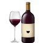

레드 와인

-L`Orso Polare Barolo
1. 단독 시음 시 선호
미국산 카베르네 소비뇽을 선호합니다.
특히 캘리포니아 스타일의 와인처럼 풀바디의 부드러운 구조감을 가진 스타일이 좋습니다.
잔당감이 느껴질 정도의 과일 숙성미와 복합적인 오크 숙성 향미가 단독으로 마시기에 좋습니다.
2. 음식 페어링 시 선호
이탈리아 레드 와인을 가장 선호합니다.
음식과의 페어링 시, 이탈리아 와인의 충분한 산미와 튀지 않는 탄닌, 섬세한 향이 피자, 파스타 등과 매우 잘 어울린다고 생각합니다.
3. 타닌과 입 안의 감각
부드럽고 혀를 감싸는 듯한 타닌을 선호합니다.
반면, 잇몸에 끼는 듯한 거친 타닌은 불쾌하게 느껴집니다.
4. 숙성 스타일
복합적인 향과 섬세한 숙성미를 가진 와인을 좋아합니다.
단순한 과일향보다는, 시간이 지나며 나타나는 우디한 향이나 성숙한 풍미에서 깊은 만족감을 느낍니다.